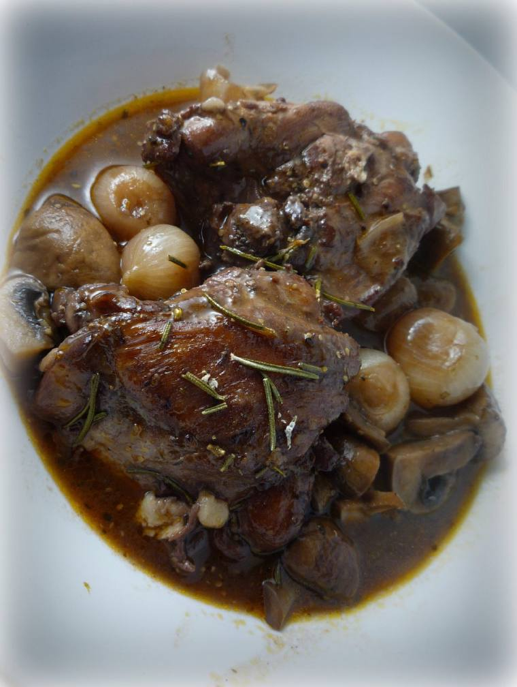

Cuisine française

Cuisine française
Coq au vin
Préparation : 30 min
Cuisson : 1 h 50
Ingrédients (pour 6 personnes)
- 2 kg de coq en morceaux
- 150 g de lardons fumés
- 150 g de lardons demi-sel
- 250 g de petits champignons de Paris
- 250 g d’échalotes
- 75 cl de bourgogne rouge
- 2 cuillères à soupe de fine champagne
- 65 g de beurre
- 50 g de chocolat noir
- 4 cuillères à soupe de chapelure
- 1 cuillère à soupe de marjolaine séchée
- 1 bouquet garni
- sel, poivre
Quantités adaptées. Les temps de cuisson ne sont pas recalculés.
- Dorer lardons, échalotes et champignons 10 à 15 minutes dans 40 g de beurre, réserver.
- Dorer le coq dans 25 g de beurre, arroser de fine champagne et flamber.
- Remettre la garniture, saler peu, poivrer, saupoudrer de marjolaine et de chapelure.
- Ajouter chocolat, bouquet garni et vin. Porter à ébullition en grattant le fond.
- Couvrir et mijoter au moins 1 h 30, jusqu’à ce que la chair soit tendre.
D’après le Guide Hachette des vins. Texte reformulé.